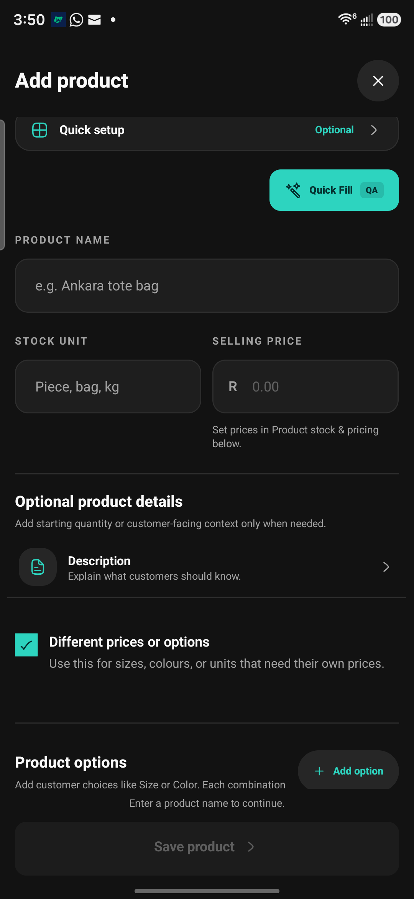
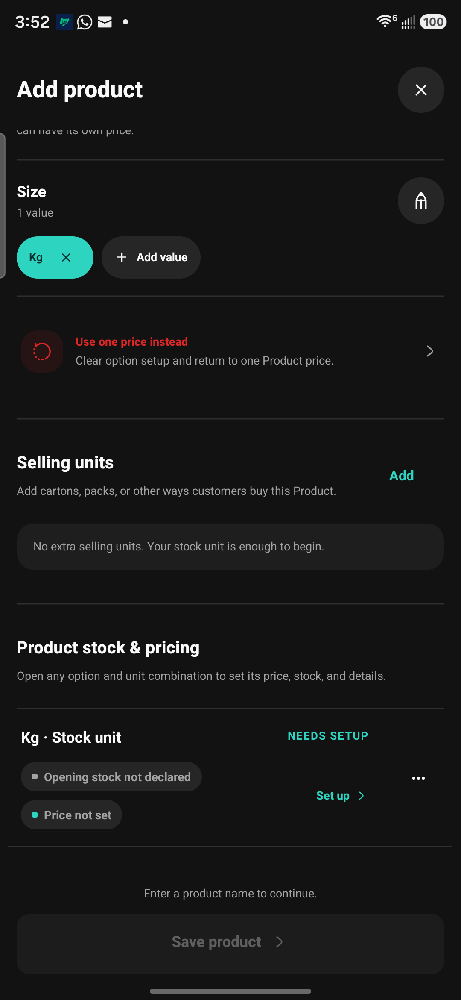
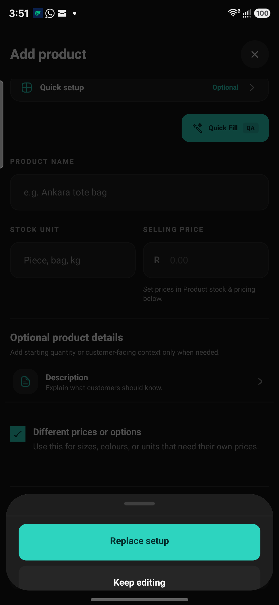
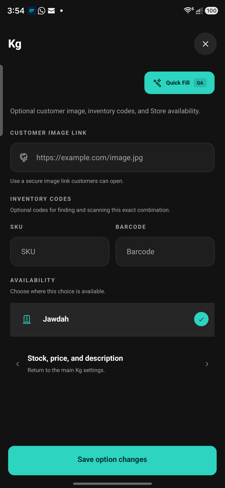

Ask about intent
“Do customers choose a size or colour?” and “Do you also sell packs?” are separate decisions. Show one example and its consequence before collecting fields.
CATALOG SETUP · MOBILE · 2 OCTOBER 2026
Let merchants add the essentials, then choose what their product needs. Explain the choice before revealing the work.
Compare the same layout in the landing page’s rust family, palm green or the original teal proposal. Dark accent tones are adapted for readability; the neutral light/charcoal surfaces stay consistent.
Category config & business mapping ↗ · Model & theme direction ↗
Business context changes suggestions only. Previously used categories come from the same local sample catalog. Nothing is assigned automatically. Shared config covers all 15 current business profiles; custom categories remain available.
Try fixed pricing, quote-required work, independent customer choices and optional tracking with the same focused-detail layout.
Open the Service direction ↗ · Saved design screens ↗ · Current Android Service audit ↗In Direction 02, enter a product name and leave the field. Try “Free-range eggs” for one match or “Chicken” for alternatives. Open Category in More details to see AI suggestions above the usual category list. Tap an emoji row to apply its full path. When there are no matches, the suggestion section stays hidden. The business selector above changes the recommendation context.
Workshop simulation using the full product category tree, your custom categories, product title and business type. No AI service is called. Use the test outcome control for no-match and unavailable states.
One-match preview ↗ · Multiple-match preview ↗“Do customers choose a size or colour?” and “Do you also sell packs?” are separate decisions. Show one example and its consequence before collecting fields.
A visible optional Images row opens selection, preview, replacement and removal. Keep a product image separate from an image for a particular choice.
Focused editors return a readable summary. Preserve drafts on Back. Show missing prices or stock as incomplete, never as invented zeros.
FROM YOUR CONNECTED SAMSUNG




NEXT WORKSHOP · WEB
Use the same capability labels, examples, image states and summaries. Then compare a desktop side sheet, a wider two-column editor and a setup outline against the live dashboard. Mobile Direction 02 is selected; carry its multi-unit flow into the separate web workshop.
Open the web handoff brief ↗